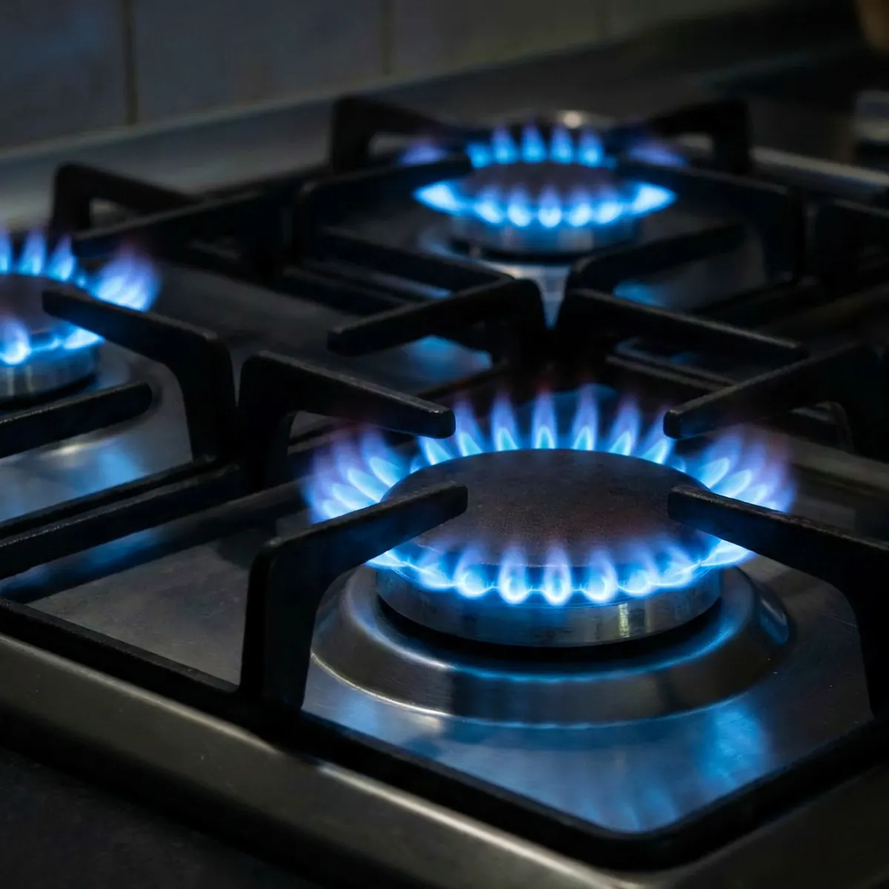

Adding a new gas appliance sounds straightforward. You have an existing gas line, the new appliance needs gas, so it seems like a simple connection should do the job. In reality, that assumption can create major performance and safety problems. Before any new gas appliance is installed, the system's total gas demand must be evaluated to make sure the existing piping can safely and efficiently deliver the required fuel.

If the gas line is not properly sized for the increased demand, one or more appliances can become starved for gas. That means poor performance, inconsistent operation, and avoidable strain on your equipment. For proper gas load calculation and professional gas appliance installation, call Angle Stop Plumbing.
Why Your Existing Gas Line May Not Be Enough
Every gas appliance in your home or commercial property requires a specific amount of fuel to operate correctly. That demand is measured in BTUs, or British Thermal Units. Your current gas piping system was sized based on the combined BTU load of the appliances that were installed when the system was designed.
When you add a new gas appliance, you also add more demand to the system. That extra demand is not always something your current gas line can handle. Even if the appliance can physically be connected, that does not mean the line is large enough to deliver the proper volume of gas during peak usage.
This is where many property owners run into trouble. A gas line that is too small for the total connected load can cause the entire system to underperform.
What Happens When a Gas Line Is Undersized?
An undersized gas line can create a fuel shortage when multiple appliances call for gas at the same time. This is commonly referred to as starving an appliance. Instead of each appliance receiving the amount of gas it was designed for, the available fuel gets split inefficiently across the system.
That can lead to problems such as:
- Weak burner flames on stoves or cooktops
- Slow recovery times on water heaters
- Inconsistent heating from furnaces or fireplaces
- Poor performance from tankless water heaters
- Premature wear on gas-powered equipment
- Combustion issues that may affect safety and efficiency
In short, your appliances may still run, but they may not run the way they should. Underperformance often starts subtly, which is why improper gas line sizing can be overlooked until the problem becomes more serious.
BTU Load Must Be Factored In
Adding a gas appliance is not just about making a physical connection. It requires a full review of the total BTU load on the system. This means accounting for all existing gas appliances, plus the new one being added, to determine whether the current piping can support the demand.
A proper gas load calculation considers several important factors, including:
- The BTU rating of each connected appliance
- The total developed length of the gas piping
- The diameter of the existing gas line
- The gas pressure available to the system
- The requirements set by local plumbing and fuel gas codes
If the numbers do not work, the gas line may need to be upsized to ensure all appliances receive adequate fuel.
Why Upsizing the Gas Line Matters
Gas piping is designed to carry a certain volume of gas over a certain distance. As more BTU demand is added, the size of the line becomes critical. A line that worked perfectly for your furnace and water heater may not be sufficient once you add a gas range, tankless water heater, pool heater, generator, or outdoor kitchen appliance.
Upsizing the gas line helps ensure:
- Proper fuel delivery to every appliance
- Reliable appliance operation during simultaneous use
- Better efficiency and performance
- Reduced risk of ignition and combustion issues
- Compliance with manufacturer specifications and code requirements
Without upsizing where necessary, you risk installing a new appliance that never performs as intended, while also affecting the appliances you already rely on every day.
Common Gas Appliance Additions That May Require Evaluation
Many homeowners are surprised to learn how often a gas system should be reevaluated. Some of the most common additions that may require gas load calculation and possible line upsizing include:
- Tankless water heaters
- Gas ranges and cooktops
- Gas dryers
- Fireplaces
- Pool heaters
- Standby generators
- Outdoor kitchens and gas grills
High-BTU appliances in particular can place a significant demand on your existing system. Assuming your current gas line is large enough without calculation is a risk not worth taking.
Professional Gas Load Calculation Is the Right First Step
Gas line sizing is not guesswork. A qualified professional must calculate the system load, inspect the existing piping, and determine whether modifications are required before installation begins. This step is essential for protecting appliance performance, preserving safety, and avoiding expensive corrections later.
When done correctly, you can add a new gas appliance with confidence knowing your system is built to support it.
Trust Angle Stop Plumbing for Gas Appliance Installation
If you are planning to add a gas appliance, do not assume your current gas line is ready for the extra load. What looks like a simple hookup may actually require a larger gas line to prevent starving appliances and underperformance.
For accurate gas load calculation, proper gas line sizing, and safe gas appliance installation, call Angle Stop Plumbing. Their team can evaluate your system, determine whether upsizing is needed, and make sure your new appliance operates safely and efficiently from day one.